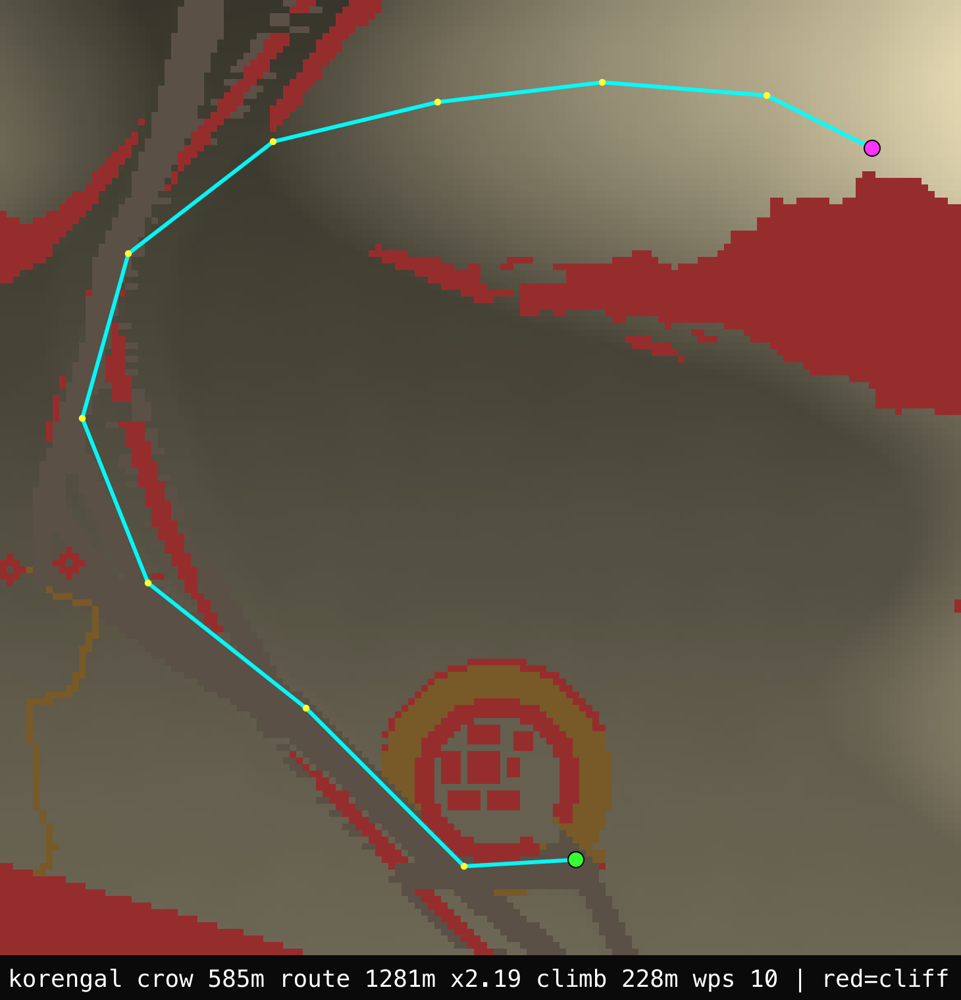
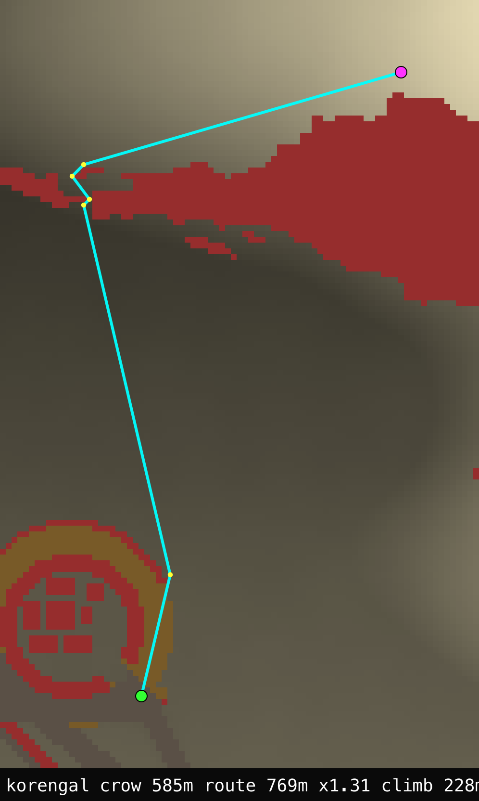
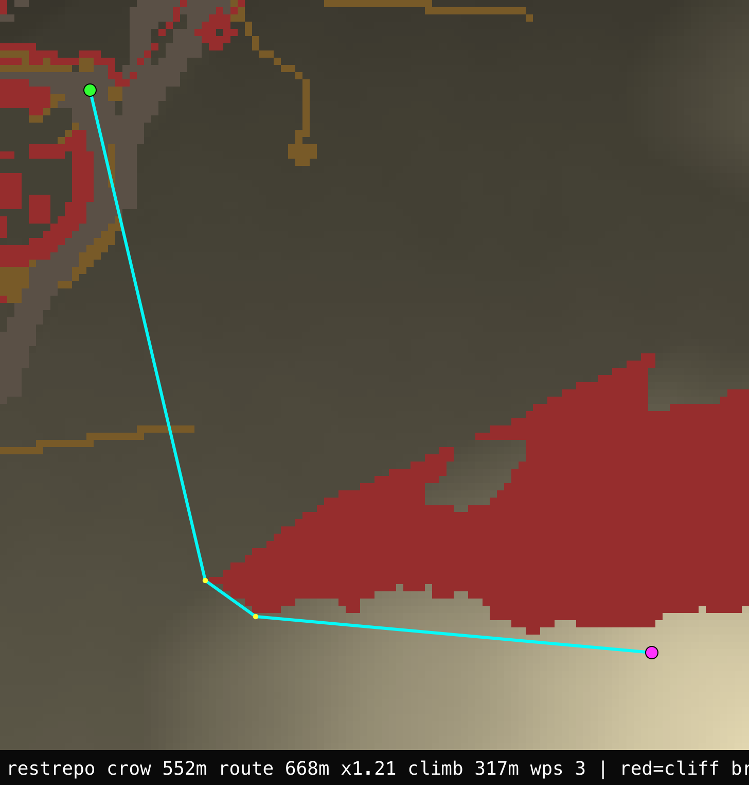
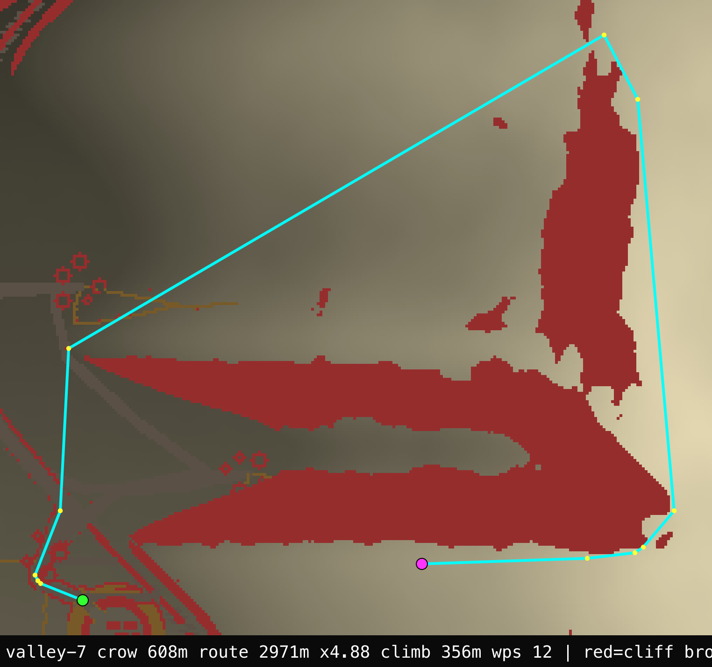

Field Engineering Report · 2026-06-10 · Issue 019
Order a squad to a peak OP and watch it walk a 3-kilometre arc around a mountain it could have climbed in 800 metres. That was the last open wound in the movement system: the pathfinder's cost was isotropic — it read a cell's slope magnitude, identical in every direction — so a diagonal traverse bought nothing and a switchback never paid off. The clean fix was a scoped rebuild the issue had already named: an any-angle (Theta*) tactical planner with a signed-grade cost, fired only for a real climb, bolted onto the proven valley router without touching a line of it.
The owner's note was blunt: "a squad ordered to a peak OP rings the spur instead of climbing it." The probe scripts/op-route-probe.ts turns that into a hard figure — for each seed it picks a fixed objective (the highest cell in a 250–560 m annulus reachable under the strict slope cutoff, so the target is identical before and after any code change), plans the real "Establish OP" march to it, and reports detour = route ÷ crow-flight. On HEAD the worst case was a squad walking 5.6 km for a 608 m climb — a ×9.25 detour; the six-seed mean was ×4.17.
moveCostAt = LAND_MOVE · clamp01(1 − slope·0.62) reads only the cell's slope magnitude — the same in every heading. A switchback only adds distance; it can never be cheaper. Mathematically, an isotropic per-cell cost cannot switchback.Two prior in-place attempts were reverted — making the existing 8-dir grid anisotropic regressed the mean and, worse, introduced a movement stall (it perturbed every route in the game). The lesson (Law 8: thrashing is a signal to rebuild) pointed at a scoped, additive planner that leaves the load-bearing router untouched:
Three pieces make the zig-zag emerge — and only together:
The branch is gated and additive. It fires only for a deliberate squad march (pathTo sets the switchback flag) to a steep, elevated, tactical-range objective. World generation never sets the flag, so the valley is byte-identical; valley-floor village routing never trips the gate, so reachability and route-quality are byte-identical; moveCostAt and the entire coarse+corridor pipeline are unchanged. When the climb planner can't reach (a goal walled off behind a genuine massif), it returns null and falls through to the proven router. Nothing the old code did, it stops doing.
The clearest proof is a trajectory diagram — the actual planned march over the elevation, with impassable cliff bands in red. Green = gate, magenta = OP, cyan = the route, yellow = waypoints.



Three seeds still show big detours (valley-7 ×4.88, kunar-3 ×4.57, korengal-2 ×9.25). The trajectory diagram shows why, and it isn't a bug:

This is the same honesty the river-navigation and reachability work landed on: when the ground forces a detour, the right answer is the detour. The win is that on a climbable face the squad now climbs.
ITM_NOSWITCH kill-switch) is unambiguous: with the switchback off, the 12×50 balance run is byte-identical to HEAD (KIA 0.92, WIA 7.33) — proving the only variable is the planner. With it on, casualties rise to KIA 1.08, WIA 7.83 on the seeds where a patrol now climbs to an elevated objective. That is not a routing bug — it is the realistic price of moving up exposed, observed high ground (the after-action reason the Korengal's ridge climbs were lethal). Critically, the stall guard passes — 0 elements stranded — which is exactly what the two prior in-place attempts failed. We accept the small, directionally-honest cost rather than narrow the planner to dodge it; a squad ordered up a steep face should climb it, and pay the climb's price.| Metric | Before | After | Note |
|---|---|---|---|
| op-route mean detour (6 tuned seeds) | ×4.17 | ×3.81 | worst ×9.25 = a real behind-massif OP |
| op-route mean detour (held-out, 8 fresh seeds) | ×3.58 | ×3.16 | worst ×5.97 → ×5.50, reached 8/8 (Law 3) |
| climbable-face OPs (korengal/restrepo/survey-52/…) | ×1.9–2.2 | ×1.07–1.63 | into the ×1.2–1.6 target band |
| switchback jitter (heading reversals) | 3–6 | 1–2 | clean bends, no staircase |
| route-quality (villages) | ALL 48 · ratio 1.12 · loopy 0 — byte-identical | gate never fires on valley floor | |
| reachability (60 seeds) | arrival counts identical on all 60 | 2 seeds shifted the worst-miss village, no count change | |
| balance (12×50, stall check) | KIA 0.92 · WIA 7.33 | KIA 1.08 · WIA 7.83 · 0 stranded | A/B: byte-identical with planner OFF |
| determinism | SMOKE OK · serialize round-trip · no new persisted state | pure planning function | |
Mechanism: lib/sim/path.ts (thetaClimb, connectedInBox, switchbackBoxMargin) · lib/sim/terrain.ts (dirSpeedAt) · lib/sim/combat.ts (pathTo gate). Probe: scripts/op-route-probe.ts (OPROUTE_NOSWITCH=1 for the A/B baseline). Raw record + before/after diagrams: docs/progress/2026-06-10-open-issues/. Built by an autonomous agent fleet; every number above is reproducible from a seed in seconds.